제1장. 서론
1.1 연구배경 및 필요성
식품산업은 소비자의 생활양식 변화에 민감하게 반응하는 산업이다. 1인 가구의증가, 맞벌이 가구의 확산, 외식비 상승이 맞물리면서 가정간편식(HMR, Home Meal Replacement)은 일상 식사의 핵심 대안으로 자리 잡았다(Harris et al., 2007; Buckley et al., 2005). 이러한 변화는 HMR 수요를 반영하는 대표적 품목군인 즉석식품류의 성장에서도 확인된다. 식품의약품안전처의 식품산업생산실적통계에 따르면 국내 즉석식품류의 매출 규모는 2015년 약 2.7조 원에서 2024년약 8.4조 원으로 증가하였다. 이러한 성장세는 2015~2024년 기간 동안 연평균 약 13.8%의 성장률로 나타나며, HMR이 일시적 트렌드를 넘어 식품산업의 구조적성장을 견인하는 핵심 축으로 전환되었음을 보여준다(그림 1).
그림 1. 국내 즉석식품류 매출 규모 변화(2015-2024)
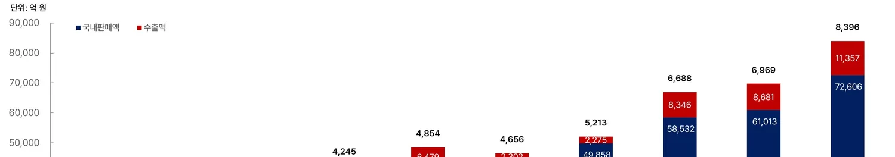
주: 식품산업생산실적통계는 매년 6월경 공표되므로, 본 그림은 작성 시점 기준 최신 자료인 2024년 실적을 반영함.
출처: 식품의약품안전처, 「식품산업생산실적통계」 각 연도를 바탕으로 저자 작성
HMR의 중요성은 성장률뿐 아니라 식품산업 내 상대적 비중에서도 확인된다.
2024년 기준 HMR 제품군은 국내 식품산업 전체 매출의 9.2%를 차지하며, 음료류에 이어 두 번째로 큰 단일 품목군을 형성하고 있다(그림 2). 이는 HMR이특정 소비층을 대상으로 한 틈새 카테고리를 넘어, 식품산업 전반에 걸쳐 전략적위상을 확보한 주류 제품군으로 성장하였음을 시사한다.
다만 HMR은 단일한 기술 범주로 일반화하기 어렵다. 가공방식과 주재료의속성에 따라 저장 조건, 품질 관리 방식이 상이하게 구성되기 때문이다. 그림 3 과 같이 HMR은 기술적 분류에 따라 인스턴트 식품, 레토르트 식품, 냉동식품으로 구분된다(박성진 등, 2016; Yu et al., 2023). 이 중 레토르트 기반 상온 HMR은 냉동 유통망(cold chain) 없이도 장기 보존과 광역 유통이 가능하다는 점에서 산업적 확장성이 높다. 그러나 상온 보존을 가능하게 하는 고온·고압 열처리는 동시에 풍미 성분의 휘발, 단백질 변성, 조직감 붕괴를 유발할 수 있다. 따라서 레토르트기반 상온 HMR은 저장성(storage stability)1)과 관능적 품질(sensory quality)2) 사이의 구조적 trade-off가 발생한다(Jimenez et al., 2024).
그림 2. 국내 즉석식품류 매출 상위 5개 품목군 비중(2024)
출처: 식품의약품안전처. 「식품산업생산실적통계」, 2024년 자료를 바탕으로 저자 작성
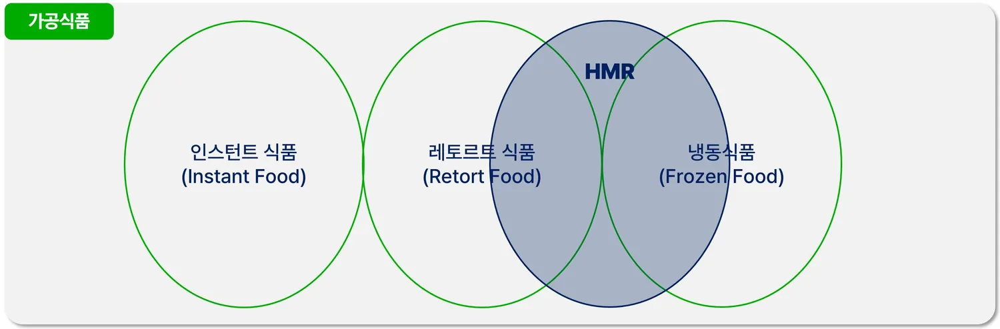
그림 3. 가공방식에 따른 HMR의 기술적 분류
출처: 한국농촌경제연구원(2015), 가정식 대체식품 산업의 현황과 정책과제
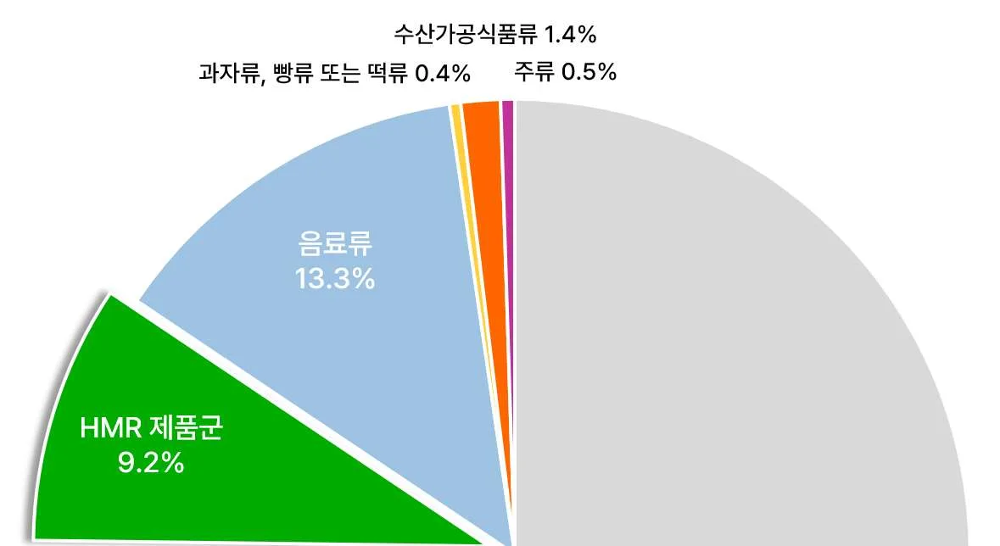
1) 저장성은 일정한 저장·유통 조건에서 식품의 안전성과 품질이 유지되는 성질을 의미한다.
2) 관능적 품질은 맛, 향, 식감, 외관 등 소비자가 감각적으로 지각하는 품질 속성을 의미한다.
이러한 trade-off는 단순한 공정 변수의 조정만으로 해소되기 어렵다. 열처리강도를 높이면 저장성과 미생물 안전성3)은 확보할 수 있으나, 식감과 풍미4) 등 관능적 품질은 저하될 가능성이 커진다. 반대로 열처리 강도를 낮추면 관능적품질의 손상은 줄일 수 있지만, 상온 유통에 필요한 미생물 안전성을 충분히 보장하기 어렵다(Catauro & Perchonok, 2012; Boekel et al., 2010; 그림 4).
그림 4. 상온 HMR 제품의 저장성-관능적 품질 trade-off 구조(출처: 저자 작성)
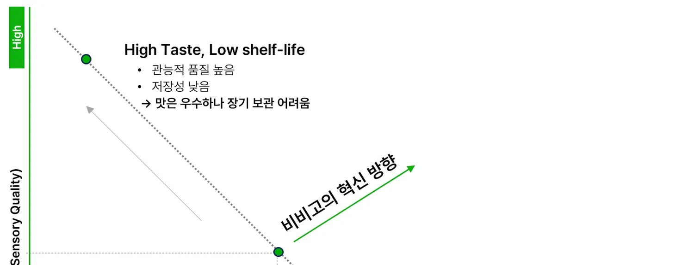
문제의 본질은 개별 공정 조건의 최적화가 아니라, 구성요소 간 관계 설정에 있다. 기존 레토르트 공정에서는 육류, 채소, 국물 등 서로 다른 물성을 가진 구성요소들이 단일 용기 안에 함께 밀봉되어 동일한 열이력(thermal history)을 부여 받는다. 그러나 각 구성요소는 조직 특성, 열전달 속도, 품질 열화 민감도에 따라서로 다른 최적 열처리 조건을 요구한다. 그럼에도 기존 공정 아키텍처는 구성요소별조건 차이를 공정 단계에서 분리하여 반영하기 어렵다. 따라서 전체 공정 조건은가장 엄격한 살균 요건을 충족하는 방향으로 설정된다. 이 과정에서 낮은 열처리로도 충분한 구성요소는 과처리되며, 그 결과 식감 저하, 풍미 손실, 조직감 붕괴가 발생한다.
3) 미생물 안전성은 식품 내 위해 미생물의 생존과 증식이 억제되어 섭취 및 유통 과정에서 안전성이 확보된 상태를 의미한다. 4) 풍미는 식품 섭취 과정에서 맛, 향, 입안 감각 등이 복합적으로 작용하여 형성되는 감각적 특성을 의미한다.
이러한 구조적 제약은 Abernathy & Utterback(1978)의 기술혁신 패턴 이론을통해 해석할 수 있다. 이들에 따르면 산업이 유동기(fluid phase)를 지나 경화기 (specific phase)에 진입하면, 지배적 설계가 안정화되고, 혁신의 초점은 공정 효율화와 점진적 개선으로 이동한다. 레토르트 기반 상온 HMR 역시 고온·고압 일괄열처리라는 지배적 공정 구조를 중심으로 발전해 왔으며, 이 과정에서 관능적품질은 독립적인 혁신 목표라기보다 기존 공정 조건 안에서 조정해야 하는 제약변수로 위치하게 되었다(Adner & Levinthal, 2001; Anderson & Tushman, 1990). 이러한 한계에 대한 기업 차원의 대응 사례가 CJ제일제당 비비고 국·탕·찌개류이다. 비비고는 기존의 일괄 고온 멸균 중심에 머무르지 않고, 원재료와 구성요소별처리 방식을 재구성함으로써 상온 유통 조건에서도 가정식에 근접한 관능적품질을 구현하고자 했다. 특히 이 사례는 식품안전 기준을 유지하면서도 누적 열처리부담을 완화하고 풍미와 식감 등 관능적 품질 저하를 줄일 수 있는 공정 조건을마련했다는 점에서 의미가 있다. 이는 단순한 제품 속성 개선을 넘어, 레토르트 기반상온 HMR의 공정 아키텍처 자체를 재구성하려는 시도로 해석할 수 있다.
본 연구는 이 현상에 주목한다. 상온 HMR 산업에서 구조적으로 고착된 저장성- 관능적 품질 간 trade-off를 비비고가 어떠한 방식으로 완화하였는지를 분석하는것이 연구의 출발점이다. 이를 통해 공정 아키텍처의 재구성이 어떻게 품질혁신의조건이 되는지를 이론적으로 규명하고, 유사한 구조적 제약에 직면한 식품 기업과산업에 전략적·기술적 시사점을 제공하고자 한다.
1.2 분석 대상 선정
본 연구는 CJ제일제당 비비고 국·탕·찌개류를 분석 대상으로 선정한다. 선정근거는 다음 세 가지이다.
첫째, 시장 지위와 산업적 대표성이다. CJ제일제당은 2024년 기준 국내 HMR 제품군에서 가장 높은 판매액을 기록한 선도기업으로 나타난다(그림 5). 식품산업은 대규모 생산설비, 품질관리 체계, 유통망, 브랜드 신뢰가 결합되는 산업이므로, 자본력과 기술력을 갖춘 선도기업의 전략적 선택이 시장 전반에 미치는 영향이크다. 선도기업의 기술적 선택은 단일 제품의 성과를 넘어, 해당 카테고리의 공정기준과 품질 기대수준 형성에 영향을 미칠 수 있다(Priyadarshini et al., 2018). 따라서 비비고 사례는 개별 제품의 성공 여부를 넘어, 국내 HMR 산업에서 공정혁신과 품질혁신이 결합되는 방식을 분석하기에 적합한 사례이다.
그림 5. HMR 제품군 주요 기업의 판매액 규모 비교(2024)
출처: 식품의약품안전처. 「식품산업생산실적통계」, 2024년 자료를 바탕으로 저자 작성
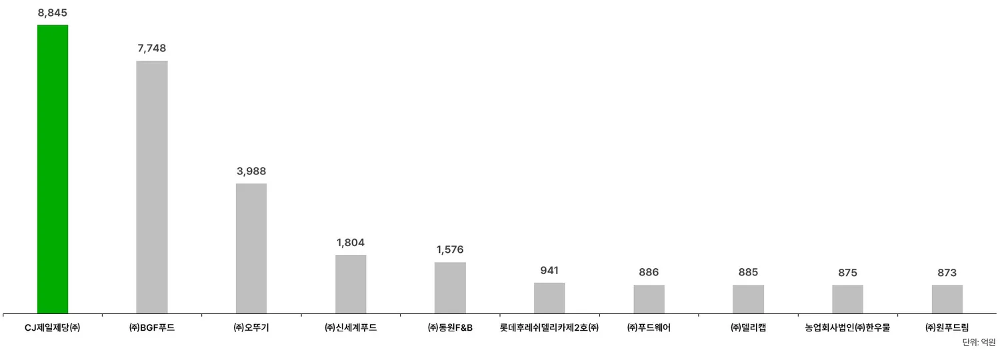
둘째, 제품 구조의 기술적 복합성이다. 국·탕·찌개류는 고형부와 액상부가 하나의용기 안에 함께 존재하는 복합 식품 구조를 가진다(Tanaka, 2012). 그러나 두 구성요소는 열처리에 대해 서로 다른 반응 특성을 보인다. 액상부는 일정 수준의 열처리를 통해 풍미가 형성되거나 안정화될 수 있는 반면, 고형부는 과도한 열처리 과정에서 단백질 변성, 수분 손실, 조직감 약화가 발생할 수 있다(Zhang et al., 2021). 이처럼 상이한 열처리 요구를 가진 구성요소를 동일 공정 조건에서 처리하는점에서 국·탕·찌개류는 저장성-관능적 품질 간 trade-off가 비교적 선명하게 드러나는 제품군이다(Wang et al., 2019).
셋째, 혁신 시도의 집약성과 추적 가능성이다. 비비고 국·탕·찌개류는 관능적 품질향상을 핵심 전략 목표로 설정하고, 이를 구현하기 위해 공정 아키텍처 재구성을적극적으로 시도한 제품군으로 볼 수 있다. 관련 등록특허와 국제출원 문헌을 통해분리 전처리, 구성요소별 공정 조건 차별화, 최종 제품 수준의 재결합 등 주요 기술적시도가 확인된다. 본 연구는 관련 특허문헌 중 공정 아키텍처 재구성과 직접 관련되는 핵심 문헌을 선별하여 분석하였다. 주요 특허문헌은 표 1에 제시하였다.
표 1. 비비고 국·탕·찌개류 관련 주요 특허
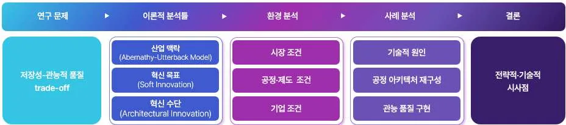
출처: WIPO PATENTSCOPE 및 KIPRIS 특허문헌을 바탕으로 저자 작성.
본 연구는 비비고 상온 국·탕·찌개류가 본격 출시된 2016년부터 2024년까지를분석 기간으로 설정하고, Yin(2018)의 단일 사례연구 방법론을 적용하였다. 단일사례연구는 특정 사례가 이론적으로 중요한 현상을 선명하게 보여주는 결정적 (critical) 사례이거나, 기존 연구에서 충분히 다루어지지 않은 희귀한(rare) 사례일때 방법론적으로 정당화된다. 비비고 국·탕·찌개류는 레토르트 기반 상온 HMR에서저장성-관능적 품질 간 trade-off를 공정 아키텍처 재구성을 통해 완화하고자 한 사례라는 점에서, 식품산업의 품질혁신 메커니즘을 분석하기에 적합한 단일 사례로 판단하였다.
분석에는 공개특허, 기업 공시자료, 정부 통계, 학술 문헌을 활용하였다. 또한 식품공학 박사학위를 보유하고 식품가공·식품안전 등 관련 분야에서 10년 이상의 연구경험을 축적한 복수의 박사급 전문가 인터뷰를 수행하여, 레토르트 공정의 열처리한계와 관능적 품질 저하 메커니즘에 대한 기술적 해석을 보완하였다. 아울러 식품의감각 품질 평가 경험을 보유한 전문가 자문을 참고하여, HMR 제품 개발 과정에서맛·향·식감 등이 평가·관리되는 실무적 맥락을 보완하였다. 이를 통해 본 연구는복수의 증거 원천을 활용하는 삼각검증(triangulation) 원칙을 적용하였다(Yin, 2018).
1.3 연구 질문
앞서 제시한 연구 배경과 분석 대상 선정 논거에 기반하여 본 연구는 다음과같은 연구 질문을 설정한다.
표 2. 본 연구의 연구 질문
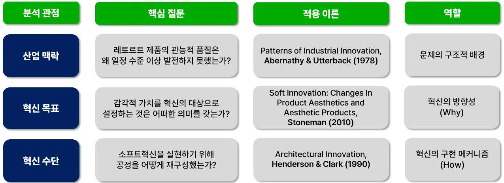
RQ 1은 비비고 혁신의 메커니즘을 규명하는 주 연구질문이다. RQ 1-1과 1-2는이를 구체화한 하위 연구질문으로, 각각 혁신의 기술적 실현 방식과 소비자 가치창출 방식을 다룬다. RQ 1-1은 저장성-관능적 품질 간 trade-off를 완화하기 위해제조 공정 아키텍처가 어떻게 재구성되었는지를 묻는다. RQ 1-2는 맛·향·식감 등관능적 품질을 개선하기 위해 어떠한 소프트혁신 메커니즘이 작동하였는지를 분석한다. RQ 2는 이 사례에서 도출할 수 있는 전략적·기술적 시사점을 식품산업 전반으로 확장하는 질문이다.
이 질문들에 답하기 위해 본 연구는 Abernathy-Utterback Model, Soft Innovation, Architectural Innovation을 이론적 분석틀로 활용한다. 구체적인 분석 흐름은 다음 절에서 제시한다.
1.4 연구 흐름
본 연구는 상온 HMR에서 나타나는 저장성-관능적 품질 간 trade-off를 출발점으로 삼는다. 이를 분석하기 위해 Abernathy-Utterback Model을 통해 레토르트기반 상온 HMR의 산업적·공정적 맥락을 해석하고, Soft Innovation을 통해 관능적 품질이 혁신 목표로 설정되는 과정을 검토한다. 이어서 Architectural Innovation의 관점에서 비비고 국·탕·찌개류의 공정 아키텍처 재구성을 분석한다.
이후 시장 조건, 공정·제도 조건, 기업 조건을 검토하여 사례가 놓인 산업·기업환경을 정리한다. 이를 바탕으로 trade-off의 기술적 원인, 공정 아키텍처 재구성, 관능 품질 구현 과정을 분석하고, 최종적으로 식품산업에 대한 전략적·기술적 시사점을 도출한다. 본 연구의 분석 흐름은 그림 6과 같다.
그림 6. 본 연구의 분석 흐름
출처: 선행연구를 바탕으로 저자 작성
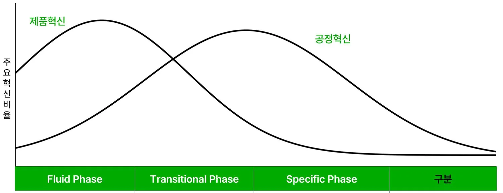
제2장. 이론적 배경
2.1 분석 프레임워크 개요
상온 HMR에서 나타나는 저장성·관능적 품질 간 trade-off는 단일한 이론적관점만으로 설명하기 어렵다. 이는 특정 산업의 기술진화 경로, 소비자가 지각하는 품질 가치, 그리고 이를 구현하는 제조 공정 구조가 맞물려 형성되는 다층적현상이기 때문이다. 이에 본 연구는 산업 맥락, 혁신 목표, 혁신 수단이라는 세 차원을 구분하고, 각 차원에 대응하는 이론적 분석틀을 설정한다(그림 7).
그림 7. 본 연구의 분석 프레임워크
출처: 선행연구를 바탕으로 저자 작성
첫째, Abernathy & Utterback(1978)의 기술혁신 패턴 연구는 산업 맥락을 설명하는분석 틀로 기능한다. 이 이론은 산업이 유동기에서 경화기로 이동하면서 지배적 설계 (dominant design)가 안정화되고, 혁신의 초점이 급진적 제품 변화에서 공정 효율화와 점진적 개선으로 이동하는 과정을 설명한다. 본 연구에서는 이를 통해 레토르트 기반 상온 HMR에서 저장성-관능적 품질 간 trade-off가 특정 공정 구조 안에서 고착된 경로를 분석한다.
둘째, Stoneman(2010)의 소프트혁신 개념은 혁신 목표를 정의하는 틀로 기능한다.
본 연구에서 관능적 품질은 단순한 제품 속성이 아니라, 소비자가 맛·향·식감 등 감각경험을 통해 지각하는 가치로 이해된다. 비비고는 이러한 관능적 품질을 개선 대상으로 설정함으로써, 기능적 성능 개선을 넘어 감각적 가치의 향상을 혁신의 핵심 목표로삼았다. 따라서 소프트혁신 개념은 비비고 혁신의 지향점이 감각적 가치의 개선으로설정된 논리적 근거를 제공한다.
셋째, Henderson & Clark(1990)의 아키텍처 혁신 이론은 혁신 수단을 분석하는 틀로기능한다. 관능적 품질이라는 소프트혁신 목표가 실제 제품 수준에서 구현되기 위해서는 이를 실현하는 제조 공정 설계가 필요하다. 이 이론은 비비고가 기존 레토르트공정의 구성요소와 연결 방식을 재구성함으로써 관능적 품질 향상의 기술적 조건을마련한 메커니즘을 설명한다.
이 세 이론은 본 연구의 문제의식을 단계적으로 설명하는 상호보완적 관계를 이룬다. Abernathy & Utterback(1978)은 trade-off가 형성된 산업적·공정적 배경을설명하고, Stoneman(2010)은 그 제약을 넘어 달성하고자 한 혁신 목표를 규정하며, Henderson & Clark(1990)은 목표를 실현하기 위한 공정 아키텍처 재구성 방식을분석한다. 이러한 이론적 결합을 통해 본 연구는 상온 HMR의 품질혁신을 산업맥락-혁신 목표-혁신 수단의 연쇄적 구조로 해석한다.
2.2 산업 혁신 패턴: Abernathy-Utterback Model
Abernathy & Utterback(1978)은 산업 내 혁신 패턴을 유동기(fluid phase), 과도기(transitional phase), 경화기(specific phase)로 구분하고, 시간의 흐름에따라 혁신의 초점이 변화한다고 설명하였다(그림 8).
그림 8. Abernathy-Utterback Model과 관능적 품질의 역할 변화
출처: Abernathy & Utterback(1978)을 바탕으로 저자 작성
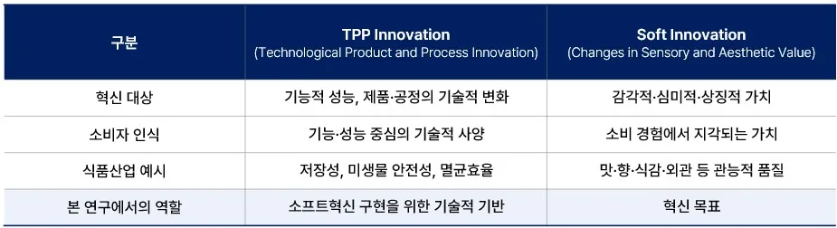
유동기에는 제품 설계 경쟁이 지배적이다. 다수의 기업이 다양한 제품을 시장에 제시하며, 이 과정에서 제품 성능과 소비자 가치의 차별화가 중요한 경쟁요소로 작용한다. 과도기에는 지배적 설계(dominant design)가 출현하면서 제품설계가 점차 표준화되고, 제품혁신과 공정 혁신이 병행된다. 이 시기에는 표준화된 설계를 기반으로 점진적 개선이 이루어지며, 경쟁의 축은 점차 성능, 품질안정성, 원가 효율성으로 이동한다. 경화기에 이르면 제품 설계와 공정 구조가안정화되고, 혁신의 중심은 공정 효율화와 품질 균일화로 이동한다. 이 단계에서기업은 기존 공정 구조가 허용하는 범위 내에서 품질을 개선하며, 관능적 품질역시 독립적인 혁신 목표가 아닌, 주어진 기술적 제약 안에서 조정·관리되는변수로 위치하게 된다(Abernathy & Utterback, 1978). 본 연구는 해당 논리를 상온 HMR에 적용하여, 지배적 공정 구조의 안정화가 저장성-관능적 품질 간 trade-off를 고착시키는 경로를 분석한다.
2.3 혁신의 지향점: Soft Innovation
Stoneman(2010)은 기존의 기술·공정·제품 중심 혁신 개념, 즉 TPP 혁신이 제품의심미적·감각적·상징적 속성 변화를 충분히 포괄하지 못한다고 보았다. 이러한혁신 개념은 주로 기능적 성능, 생산 효율, 기술적 개선을 중심으로 혁신을정의하는 경향이 있다. 이에 비해 소프트혁신(soft innovation)은 제품의 물리적기능이 크게 변화하지 않더라도, 소비자가 지각하는 감각적·심미적 가치가 변화하는 경우 이를 혁신으로 이해한다. 즉, 소프트혁신은 기술적 사양의 향상보다 소비자가 실제 사용·소비하는 과정에서 경험하는 가치의 변화를 혁신의 핵심 대상으로설정한다(표 3).
표 3. TPP 혁신과 소프트혁신의 차이 및 본 연구에서의 역할
출처: Stoneman(2010)을 바탕으로 저자 재구성
식품산업에서 소프트혁신의 핵심 대상은 맛, 향, 식감, 외관 등 소비자가 직접경험하는 관능적 품질이다. 관능적 품질은 구매 결정과 재구매 의도에 영향을미치지만 이를 기능적 성능이나 기술적 사양만으로 온전히 설명하기는 어렵다.
식품의 맛과 식감은 원료 자체의 특성뿐 아니라 원료 처리 방식, 가열 조건, 구성요소 간 결합 방식에 따라 달라지기 때문이다. 따라서 관능적 품질은 단순한 부가적 속성이 아니라, 제품 개발 과정에서 의도적으로 설계하고 개선할 수있는 혁신 목표로 이해될 수 있다.
본 연구에서 소프트혁신은 비비고 혁신 지향점을 설명하는 개념으로 기능한다.
비비고가 추구한 핵심 목표는 단순히 유통기한을 연장하거나 멸균 효율을 높이는 데 있지 않았다. 상온 유통 조건에서도 가정식에 근접한 맛과 품질을 구현함으로써, 소비자가 지각하는 감각적 가치를 향상시키는 것이 핵심이었다. 다만이러한 소프트혁신이 제품 수준에서 실현되기 위해서는 감각적 가치를 물리적으로 구현할 수 있는 제조 공정 구조가 필요하다. 이 점에서 소프트혁신은 다음절에서 논의할 아키텍처 혁신과 연결된다.
2.4 혁신의 실현 수단: Architectural Innovation
Henderson & Clark(1990)은 혁신을 점진적 혁신과 급진적 혁신으로만 구분하는 기존 관점에 한계가 있다고 보았다. 혁신의 영향은 구성요소(component) 자체의변화뿐 아니라, 구성요소 간 연결 방식의 변화에 의해서도 달라질 수 있기 때문이다. 이에 이들은 제품 지식을 구성요소 지식과 구성요소 간 연결 방식에 관한아키텍처(architecture) 지식으로 구분하고, 두 차원의 변화 여부에 따라 혁신을점진적(incremental), 모듈러(modular), 아키텍처(architectural), 급진적(radical) 혁신의 네 유형으로 재분류하였다(그림 9).
이 중 아키텍처 혁신은 개별 구성요소의 핵심 설계는 유지하되, 구성요소 간연결 방식과 시스템 수준의 설계가 재구성되는 혁신을 의미한다. Henderson & Clark(1990)은 아키텍처 혁신이 기존 기업에게 특히 어려운 이유를 조직 내 지식구조에서 찾는다. 기존 기업은 개별 구성요소에 관한 지식은 보유하지만, 구성요소 간 연결 방식에 관한 아키텍처 지식이 조직 내에 암묵적으로 고착되어 있는 경우가 많다. 따라서 아키텍처가 변화할 때 기존 기업은 변화의 의미를 충분히인식하지 못하거나, 기존 지식 체계에 기반해 변화에 둔감하게 반응할 수 있다.
그림 9. Henderson & Clark 혁신 유형과 비비고 사례의 위치
출처: Henderson & Clark(1990)을 바탕으로 저자 재구성
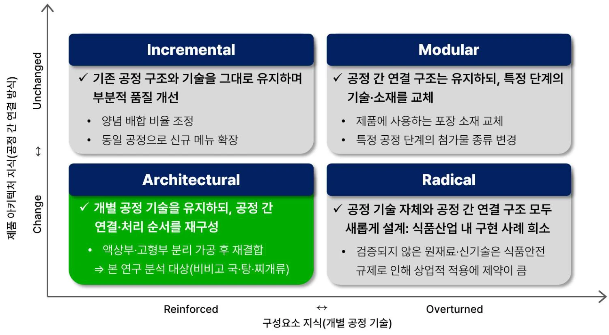
본 연구에서 아키텍처 혁신은 소프트혁신을 제품 수준에서 구현하기 위한선행 조건으로 기능한다. 기존의 일괄식 고온 멸균 공정 구조에서는 레시피나원료를 개선하더라도, 멸균 과정에서 관능적 품질이 구조적으로 훼손된다.
따라서 관능적 가치를 구현하기 위해서는 개별 원료나 레시피의 개선을 넘어,구성요소 간 처리 방식과 결합 구조의 재구성이 선행되어야 한다. 즉, 본 사례의 소프트혁신은 공정 아키텍처 재설계를 통해 제품 수준에서 실현될 수 있었다.
염지5), 블랜칭6), 냉동블록, 마이크로파 감균7) 등 개별 공정 기술은 기존 식품가공 지식에 기반한다. 그러나 비비고는 액상부와 고형부를 분리 가공한 후 재결합하는 방식으로 공정 간 연결 구조를 재구성하였다. 이는 개별 구성요소 지식은 상당 부분 유지하면서 구성요소 간 연결 방식을 변화시킨 아키텍처 혁신의 사례로 볼 수 있다.
나아가 이러한 공정 아키텍처 재구성은 기업의 기술적 역량만으로 성립한것이 아니라, 동등한 미생물 안전성 확보를 전제로 대안적 공정 설계를 허용하는 제도적 조건과 결합하여 이해할 필요가 있다. 식품공전은 레토르트 식품의 멸균기준을 “제품의 중심 온도 120℃ 이상에서 4분 이상 열처리하거나, 이와 동등이상의 효력이 있는 방법”으로 규정한다(식품의약품안전처, n.d.). 이 규정은 고정된 온도·시간 조건만을 유일한 기준으로 삼기보다, 동등한 수준의 미생물안전성을 확보할 수 있는 대안적 공정 설계의 여지를 제공한다. 따라서 기술적가능성과 제도적 허용 조건이 맞물리는 지점에서 비비고의 혁신이 성립할 수있었다.
제3장. 산업·기업 환경 분석
3.1 시장 구조: HMR 경쟁 기준의 변화
국내 HMR 시장은 단순한 편의식 시장에서 품질과 경험 가치를 중시하는 일상식 시장으로 전환되어 왔다. 앞서 살펴본 즉석식품류 매출 확대는 이러한변화를 보여주는 대표적 지표이다(그림 1). 따라서 본 절에서는 시장 규모의 확대 자체보다, 경쟁 기준의 변화에 주목한다.
HMR 시장은 제품 특성과 소비자 가치의 변화에 따라 크게 네 세대로 구분된다(그림 10). 1세대는 편의성 중심의 인스턴트 제품으로, 조리 간소화 및 장기보존성이 핵심 가치였다. 2세대는 냉장·냉동 보존기술의 확산을 바탕으로 신선함과 제품 다양성이 강화된 단계이다. 3세대는 식사대용식이 본격적으로 확산되면서 5) 염지는 식품 원료에 소금, 당, 조미액 등을 침투시켜 풍미와 조직감을 조절하는 전처리 공정을 의미한다. 6) 블랜칭은 식품 원료를 짧은 시간 동안 가열 처리하여 효소 활성을 낮추고 색, 조직감, 저장 안정성을 조절하는 전처리 공정을 의미한다. 7) 마이크로파 감균은 마이크로파 에너지에 의해 식품 내부에서 열을 발생시켜 미생물 수를 감소시키는 처리 방법으로, 본 연구에서는 최종 멸균전 단계에서 미생물 부담을 낮추는 공정으로 이해한다.
맛과 품목 다양성이 주요 경쟁 요소로 부상한 시기이다. 4세대는 기술적 안정성과 관능적 품질을 결합하여 일상식에 가까운 경험 가치를 제공하는 프리미엄 HMR단계로 볼 수 있다(김연정 등, 2017; 이두영, 2017). 비비고 국·탕·찌개류는 상온 유통의 편의성을 유지하면서도 가정식에 가까운 맛과 식감을 구현하고자 했다는 점에서 4세대 HMR의 대표적 사례로 해석할 수 있다.
그림 10. HMR 산업의 세대별 진화와 경쟁 기준 변화8)
출처: 이두영(2017)을 바탕으로 저자 재구성
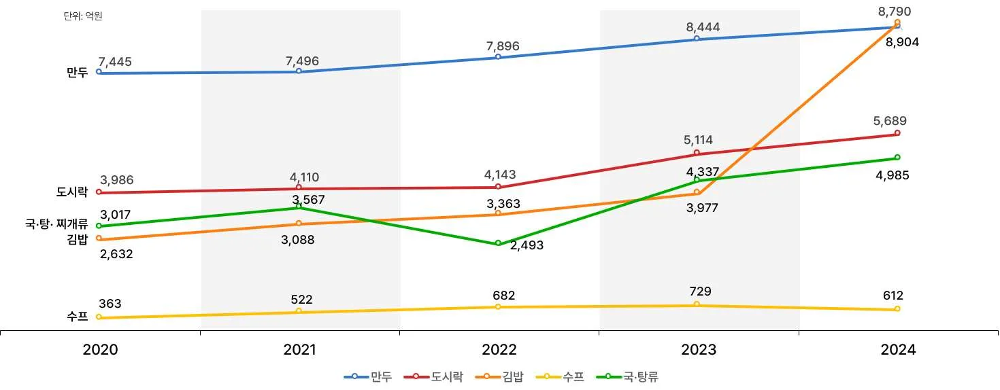
이러한 시장 변화 속에서 상온 HMR은 냉장·냉동 HMR과 구별되는 세분시장을 형성한다. 상온 HMR은 별도의 냉장·냉동 유통망 없이 장기 보존과 광역 유통이가능하다는 장점을 지니지만, 이를 위한 열처리 공정은 맛, 향, 식감 등 관능적품질 저하를 유발할 수 있다. 따라서 상온 HMR은 저장성 확보와 관능적 품질유지라는 이중 과제를 내재한다.
이 이중 과제가 가장 선명하게 드러나는 제품군이 국·탕·찌개류이다. 해당 품목은 액상부와 고형부가 공존하는 복합 제품 구조를 가지며, 국물의 풍미와 고형 원료의 8) 그림 내 제품 이미지는 세대별 제품 예시를 설명하기 위한 참고 이미지이며, 각 이미지의 권리는 해당 제조사 또는 브랜드에 있음.
식감이 동시에 요구된다. 이로 인해 상온 유통을 위한 멸균 조건과 관능적 품질 유지조건 간 긴장이 비교적 뚜렷하게 나타난다.
이러한 기술적 긴장에도 불구하고 국·탕·찌개류는 시장 측면에서 주요 성장품목으로 확인된다. HMR 주요 품목의 국내 판매액 추이를 보면, 국·탕·찌개류는 2020년 3,017억 원에서 2024년 4,985억 원으로 증가하였다(그림 11). 따라서국·탕·찌개류는 상온 HMR의 품질 trade-off가 선명하게 나타나는 동시에 시장성장성도 확인되는 제품군으로서, 공정 아키텍처 혁신을 분석하기에 적합한 사례적위치를 갖는다.
그림 11. HMR 주요 5개 품목군의 국내 판매액 추이(2020-2024)
출처: 식품의약품안전처. 「식품산업생산실적통계」, 2024년 자료를 바탕으로 저자 작성
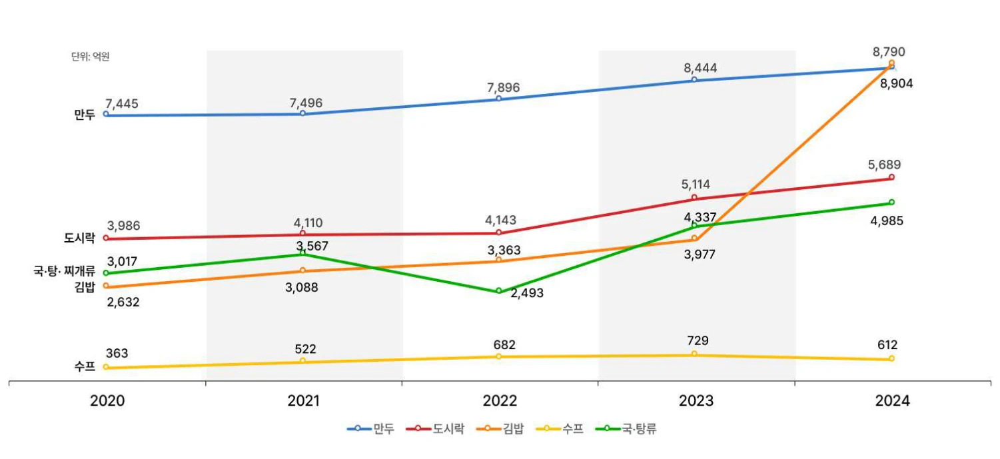
3.2 지배적 공정 구조: 레토르트 공정의 고착과 한계
상온 HMR의 품질혁신을 이해하기 위해서는 시장 변화뿐 아니라 이를 뒷받침하는 공정 구조를 함께 살펴볼 필요가 있다. 국내 레토르트 식품 시장은 1981년오뚜기의 ‘3분 카레’ 출시를 계기로 본격적으로 형성되었다. 이후 레토르트 공정은 상온 유통과 장기 보존을 가능하게 하는 대표적인 식품가공 방식으로 자리잡았다. 이러한 산업 형성 과정에서 지배적 설계로 기능한 것은 특정 제품 자체가 아니라, 식품을 밀봉한 뒤 고온·고압 조건에서 열처리하여 미생물 안전성과저장성을 확보하는 공정 구조였다.
초기 레토르트식품은 카레·짜장류와 같이 비교적 균질한 소스형 제품을 중심으로성장하였다. 해당 제품에서는 상온 보존성과 조리 편의성이 핵심 가치였고, 레토르트공정은 해당 가치를 안정적으로 구현하는 데 적합했다. 그러나 HMR 시장이 국·탕· 찌개류와 같은 일상식 영역으로 확장되면서 소비자가 요구하는 품질 기준은 변화했다. 장기간 보관이 가능하고 간편하게 섭취할 수 있는 제품을 넘어, 가정식에가까운 맛과 식감을 제공하는 제품이 경쟁의 중심으로 부상한 것이다.
그럼에도 상온 HMR의 기본 공정 구조는 오랫동안 밀봉 후 일괄 열처리 방식을중심으로 유지되어 왔다. 기업들은 기존 일괄 열처리 체계 내에서 원료 품질을 높이거나 조미 배합을 개선하는 방식으로 품질 향상을 시도해 왔다. 그러나 최종 멸균과정에서 제품 전체가 동일한 열이력에 노출되는 한, 개선 효과는 제한적으로 나타날수밖에 없었다. 즉, 기존 레토르트 공정은 저장성과 편의성을 확보하는 데 효과적이었으나 관능적 품질을 적극적으로 개선하기에는 공정 구조상 한계가 있었다.
결국 소비자들은 레토르트를 ‘능동적 선택보다 상황적 대용으로 소비되는 제품’ 으로 인식하였다. 이 인식은 시장 성장의 하방 압력으로 작용하였으며, 동시에 관능적품질을 혁신의 대상으로 삼을 수 있는 기업에게는 선점 기회로 작용하였다. 비비고의전략적 선택은 이 맥락에서 이해되어야 하며, 해당 선택이 가능했던 제도적 조건을다음 절에서 검토한다.
3.3 제도적 환경: 식품안전 기준과 대안적 공정 설계
그림 12. 레토르트 식품 멸균 기준과 공정 설계 방식 비교
출처: 식품의약품안전처, 「식품의 기준 및 규격」 (식품공전)을 바탕으로 저자 작성
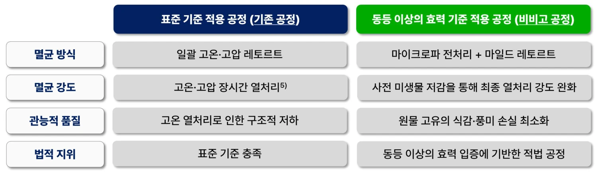
레토르트 식품의 제조와 유통은 식품공전의 식품안전 기준 안에서 이루어진다.
식품공전은 레토르트 식품의 멸균 기준을 “제품의 중심온도 120℃ 이상에서 4분이상 열처리하거나, 이와 동등 이상의 효력이 있는 방법”으로 규정한다(식품의약품안전처, n.d.). 이 규정은 상온 유통 식품이 확보해야 하는 미생물 안전성의 기준을제시하며, 표준 기준 적용 공정과 동등 이상 효력 기준 적용 공정을 구분하는 제도적근거가 된다(그림 12).
해당 기준은 고온·고압 열처리라는 기존 공정 방식이 활용될 수 있는 제도적기반을 제공한다. 다만 식품공전이 규정하는 ‘중심온도 120℃ 이상, 4분 이상’ 은 멸균 유지 구간만을 의미한다. 실제 공정에서는 레토르트 내부를 목표 온도까지 끌어올리는 승온 구간과 처리 후 제품을 냉각하는 구간이 추가되므로, 제품이 고열에 노출되는 실질적인 총 처리 시간은 수십 분에 달한다. 이러한 누적열처리는 단백질 변성, 향미 성분 휘발, 식감 저하 등 관능적 품질 전반의 하락요인으로 작용한다.
한편 식품공전은 ‘동등 이상의 효력’이 인정되는 방법도 함께 규정하고 있다.
이는 고정된 온도·시간 조건만을 유일한 방식으로 요구하는 것이 아니라, 동등한수준의 미생물 안전성을 확보할 수 있다면 다른 처리 방식도 적용될 수 있음을 의미한다. 비비고의 마이크로파 감균 기반 마일드 레토르트 공정은 이 조항을 근거로 설계되었다. 이처럼 기술적 대안과 제도적 허용 조건이 맞물리는 지점에서 공정 아키텍처 재구성이 가능해진다.
3.4 분석 대상 기업: CJ제일제당의 시장 지위와 비비고의 전략적 위치
CJ제일제당은 국내 식품산업을 대표하는 종합식품기업으로, 소재식품에서 가공식품, HMR로 사업 포트폴리오를 확장해 왔다. 회사소개서에 따르면 CJ제일제당은 비비고, 햇반, 고메, 백설 등 주요 브랜드를 보유하며, R&D 기술과 생산 역량을 바탕으로 2024년 기준 전체 매출 17.9조 원을 기록하였다.
CJ제일제당의 시장 영향력은 주요 제품군별 점유율에서도 확인된다. 햇반은 2014년 65% 에서 2024년 70%로 확대되었고 , 캔햄은 64%, 만두는 45% 의점유율을 기록하였다 . 국 ·탕 ·찌개류 역시 2018 년 이후 약 39% 의 점유율을유지하고 있다 (그림 13). 이는 CJ제일제당이 단일 제품군에 의존하기보다 , 복수의 HMR 카테고리에서 안정적인 경쟁력을 확보해 왔음을 보여준다. 선도기업의 제품 전략과 공정 선택은 개별 제품의 성과를 넘어, 해당 카테고리의품질 기대수준과 경쟁 기준 형성에 영향을 미칠 수 있다(그림 5). 따라서 CJ제일제당 사례는 국내 HMR 산업에서 품질 경쟁과 공정혁신이 결합되는 방식을 살펴보기에 적합한 분석 대상이다.
이러한 HMR 포트폴리오 안에서 비비고는 한식 기반 간편식을 대표하는 핵심브랜드로 자리한다. 비비고는 만두, 국·탕·찌개류, 김치 등 식사 구성과 직접 연결되는제품군을 통해 CJ제일제당의 HMR 사업을 구체화해 왔다. 그중에서도 비비고 국·탕· 찌개류는 HMR 포트폴리오의 식사 완결성과 품질 이미지를 강화하는 전략적 카테고리로 볼 수 있다. 국·탕·찌개류는 고형부와 액상부가 결합된 복합 제품 구조를가지며, 동시에 한국식 가정식을 대표하는 국물요리라는 문화적 상징성을 지닌다.
또한 밥, 반찬, 김치류 등 인접 제품군과 결합하여 한 끼 식사의 중심 메뉴로 기능한다. 제4장에서는 이 제품군에서 나타난 공정 아키텍처 재구성의 구체적 양상을 분석한다.
그림 13. CJ제일제당 HMR 관련 주요 제품군의 시장점유율 추이(2014-2024)
출처: CJ제일제당(2024). 회사 소개 및 사업 포트폴리오 기반으로 저자 작성
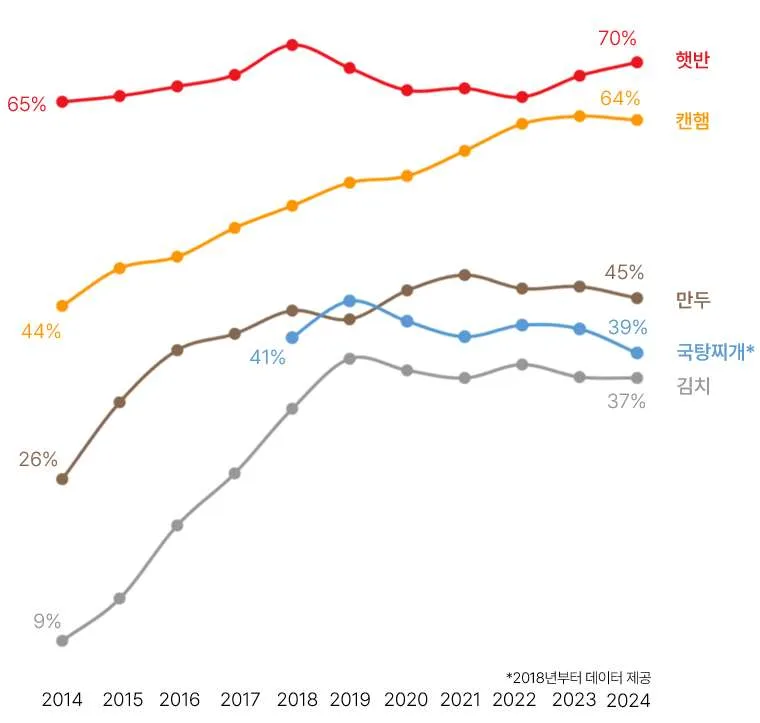
제4장. 비비고의 혁신 메커니즘 분석
4.1 저장성-관능적 품질 Trade-off의 기술적 원인
상온 HMR에서 저장성과 관능적 품질 간 trade-off는 열처리 강도의 단순 조정만으로 완화되기 어렵다. 핵심은 기존 레토르트 공정에서 열처리 요구조건이 상이한구성요소들이 하나의 용기 안에서 동일한 열이력에 노출된다는 데 있다. 따라서 trade-off의 원인은 개별 온도·시간 설정값 자체보다, 이질적 구성요소를 하나의공정 구조 안에서 함께 처리하는 방식에 있다.
열처리 강도를 높이면 미생물 안전성과 저장성은 향상될 수 있다. 그러나 이 과정에서 단백질 변성, 수분 및 향 성분의 손실이 발생하며, 이는 맛·향·식감 등 관능적품질 저하로 이어진다. 반대로 열처리 강도를 낮추면 관능적 품질의 손상은 줄일수 있지만, 상온 유통에 필요한 미생물 안전성을 충분히 보장하기 어렵다. 이처럼저장성과 관능적 품질은 기존 일괄 열처리 구조 안에서 동시에 최적화되기 어려운긴장 관계를 형성한다(Nadkarni & Hatton, 1985; Tucker & Featherstone, 2010; Str atakos & Koidis, 2015).
그림 14. 누적 열처리 부담 완화에 따른 저장성-관능적 품질 trade-off 개선 구조(출처: 저자 작성)
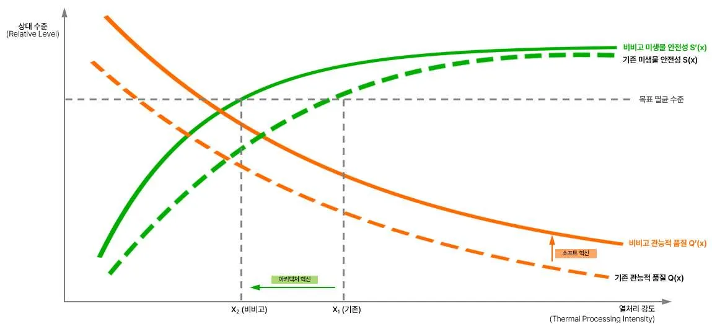
주: 본 그림은 실측 데이터가 아닌 trade-off 완화 구조를 설명하기 위한 개념도임 비비고 사례는 이러한 trade-off가 단순히 열처리 강도의 조정이 아니라 공정아키텍처의 재구성을 통해 완화될 수 있음을 보여준다. 이를 개념적으로 나타낸 것이
그림 14로, 미생물 안전성과 관능적 품질 간의 정량적 균형점이나 최적 교차점을
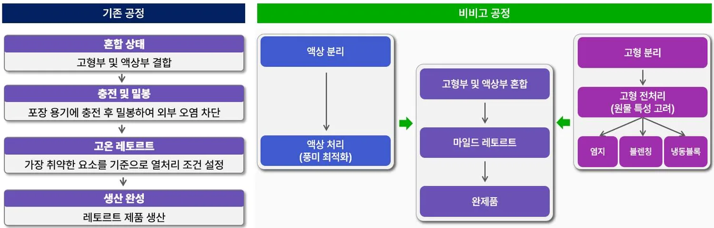
제시하기 위한 실증 그래프라기보다, 누적 열처리 부담이 증가할수록 두 품질속성이 상반된 방향으로 변화하는 관계를 설명하기 위해 도식화한 개념도이다.
따라서 본 연구의 관심은 두 곡선의 교차 여부나 위치 자체가 아니라, 공정 재설계를 통해 안전성과 품질 간의 긴장 관계를 어떻게 완화할 수 있는지에 있다.
이러한 관점에서 비비고 공정의 핵심은 동일한 안전성 목표를 유지하면서도이를 달성하는 방식을 변화시킨 사례로 볼 수 있다. 구체적으로 구성요소별 전처리 및 사전 감균, 액상부·고형부 분리 처리 등이 결합하면서 최종 레토르트 단계에집중되던 열처리 부담이 분산·완화된다. 이는 기존 공정에서 목표 멸균 수준을 충족하기 위해 요구되던 누적 열처리 부담이 Χ1에서 Χ2로 낮아지는 효과로 표현될 수 있으며, 그 결과 동일한 안전성 조건에서 관능적 품질 곡선이 기존 Q(x)
에서 Q′(x)로 상향 이동하는 효과로 표현된다. 즉, 비비고 혁신의 안전성과 관능품질 사이의 특정 균형점을 선택한 것이 아니라, 동일한 안전성 조건을 유지하면서도 소비자가 지각하는 맛·향·식감의 손상을 줄일 수 있돌독 공정 구조 자체를 재설계한 것으로 해석할 수 있다.
따라서 비비고 혁신의 핵심은 단순한 열처리 강도 저감이 아니라, 공정 아키텍처 재구성을 통해 미생물 안전성과 관능적 품질을 동시에 달성할 수 있는구조를 마련한 데 있다. 이어지는 절에서는 이러한 공정 아키텍처의 재구성을액상부, 고형부, 멸균공정의 구성요소별 전환을 중심으로 분석한 후, 관능적 품질이설계 가능한 혁신 목표로 전환되는 소프트혁신 메커니즘을 검토한다.
4.2 공정 아키텍처 재구성
4.2.1 기존 공정과 비비고 공정의 구조적 차이
소프트혁신이 제품 수준에서 구현되기 위해서는 이를 뒷받침하는 공정 구조의전환이 필요하다. 기존의 일괄 고온 처리 방식이 유지되는 한, 개별 원료 개선이나 레시피 조정만으로는 관능적 품질을 개선하기 어렵다. 기존 공정은 액상부와고형부를 결합한 상태에서 단일 열처리 조건을 적용하였으며, 전체 멸균 조건은 가장 열에 취약한 구성요소 또는 가장 엄격한 안전성 기준을 중심으로 설정되었다(Gaze, 2005; Beaman et al., 1982).
그림 15. 기존 공정과 비비고 공정의 아키텍처 비교(출처: 저자 작성)
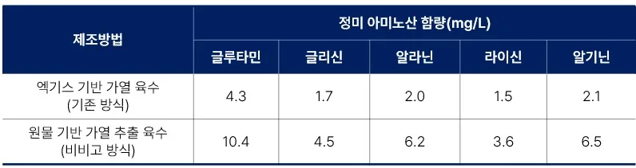
반면 비비고 공정은 액상부와 고형부를 분리 가공한 뒤, 각각의 특성에 맞는처리 조건을 적용하고 최종 단계에서 재결합하는 방식으로 공정 간 연결 구조를 재구성하였다(그림 15). Henderson & Clark(1990)의 관점에서 볼 때, 이는 개별 구성요소의 핵심 설계는 유지하되 구성요소 간 연결 방식을 변화시킨 아키텍처혁신에 해당한다. 이를 통해 액상부와 고형부의 관능적 품질을 보다 독립적으로 제어할 수 있는 조건이 형성되었다(RQ 1-1).
4.2.2 액상부 공정 전환: 원물 직접 가열추출을 통한 정미성 향상
액상부 공정의 전환은 육수의 정미성을 높이는 동시에 레토르트취9)를 저감하는 데 초점을 둔다. 기존 방식은 엑기스·분말 조미원료를 정제수에 혼합한 뒤 가열하여 육수를 제조하였으나, 이 과정에서 레토르트취의 원인 성분으로 알려진2-Pentyl-Furan, 2-Heptanal, 3-Octanone 등이 높게 잔존하는 한계를 보였다. 반면 비비고 방식은 원재료를 직접 가열·추출하고, 온도 조건을 단계적으로 조절함으로써, 원물 유래 정미 성분이 효과적으로 용출될 수 있도록 액상부 공정을 재설계하였다.
표 4. 가열공정 방식에 따른 정미아미노산10) 함량 비교: 기존 방식 vs 비비고 방식
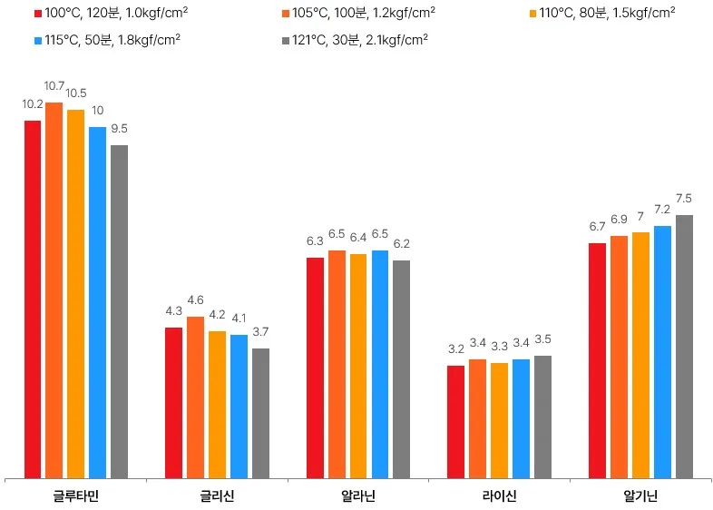
그림 16. 2차 가열 조건별 정미아미노산 함량 비교
출처: CJ제일제당(주), 식품 조리물의 제조방법, 국제공개번호 WO 2018/128531 A1, 국제출원일: 2018.01.09.
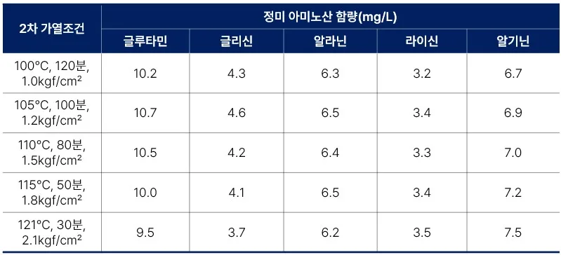
9) 레토르트취는 레토르트 가열·멸균 과정에서 발생하는 특유의 가열취 또는 이취를 의미하며, 식품의 향미와 관능적 품질을 저하시킬 수 있다. 10) 정미아미노산은 식품의 감칠맛, 단맛, 고소한 맛 등의 맛(정미성)의 형성에 기여하는 아미노산을 의미한다.
실험 결과, 원물 직접 가열추출 방식은 기존 엑기스 기반 방식보다 주요 정미아미노산 함량이 높게 나타났다. 글루타민은 기존 방식 4.3mg/L에서 비비고 방식 10.4mg/L로 증가하였으며, 글리신, 알라닌, 라이신, 알기닌 역시 모두 기존방식보다 높은 값을 보였다. 이는 액상부 공정 전환이 단순한 원료 대체가 아니라,맛 성분의 형성과 보존을 위한 공정 조건의 재설계였음을 보여준다.
표 5. 2차 가열 조건에 따른 정미아미노산 함량 변화
출처: CJ제일제당(주), 식품 조리물의 제조방법, 국제공개번호 WO 2018/128531 A1, 국제출원일: 2018.01.09
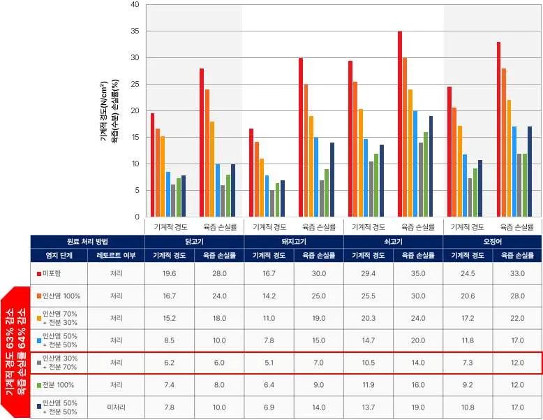
비비고 공정은 이후 2차 가열 조건의 최적화로 이어진다. 100℃에서 121℃까지의 5개 가열 조건을 비교한 결과, 조건 간 정미아미노산 함량은 전반적으로 유사한 수준을 유지하였다(그림 16, 표 5). 이는 정미 성분의 유지가 특정한 저온·장시간 조건에만 의존하지 않으며, 고온·단시간 조건에서도 정미 성분 손실을 크게 증가시키지 않고 2차 가열 시간을 조정할 수 있음을 보여준다.
따라서 액상부 공정 전환은 원물 기반의 맛 성분을 강화하는 데 그치지 않고,후속 가열 조건을 조정하여 정미 성분의 손실을 억제하는 공정 재설계로 해석할수 있다. 이 점에서 비비고의 액상부 공정은 관능적 품질 향상이라는 소프트혁신의 목표가 공정 아키텍처 재구성을 통해 구현된 사례에 해당한다(RQ 1-1, RQ 1-2).
4.2.3 육류 고형부 사전 안정화: 복합 염지블랜칭
고형부 공정의 핵심은 고온 멸균 과정에서 발생하는 조직 경화와 육즙 손실을 사전에 억제하는 데 있다. 기존 레토르트 공정은 육류가 고온 조건에 장시간 노출되는 구조로 인하여 고기의 경도가 증가하고 육즙이 손실되는 한계를 내재한다. 이는 최종 제품에서 고기가 단단하고 퍽퍽하게 느껴지는 식감 저하로 이어질 수 있다.
11) 블랜칭은 식품 원료의 표면을 단시간 데치는 전처리 공정으로, 본 연구에서는 육류 고형부의 조직 안정화와 육즙 손실 완화를 위한 처리로이해한다.
비비고 공정은 이를 완화하기 위해 육류를 인산염과 전분을 포함한 염지액에사전 처리하여 단백질 조직을 안정화하고, 이후 블랜칭 공정을 병행함으로써 조직경도와 수분 손실률을 함께 제어하는 방식으로 고형부 공정을 재설계하였다.
실험 결과, 염지 처리만으로도 육류의 기계적 경도와 육즙 손실률은 크게 감소하였다. 특히 인산염 30%와 전분 70%를 적용한 조건에서는 기계적 경도가 약 63%, 육즙 손실률이 약 64% 감소하여, 염지 단계가 고온 멸균 이전의 조직안정화에 효과적으로 작용함을 확인하였다(그림 17). 이는 고형부의 관능적 품질이최종 멸균 단계에서만 결정되는 것이 아니라, 멸균 이전의 전처리 조건에 의해상당 부분 제어될 수 있음을 보여준다.
그림 17. 염지 처리 조건에 따른 육류의 기계적 경도 및 육즙 손실률 변화
출처: CJ제일제당(주), "식품 재료의 제조방법 및 식품 재료", 제10-2104640호, 등록일: 2020.4.20.
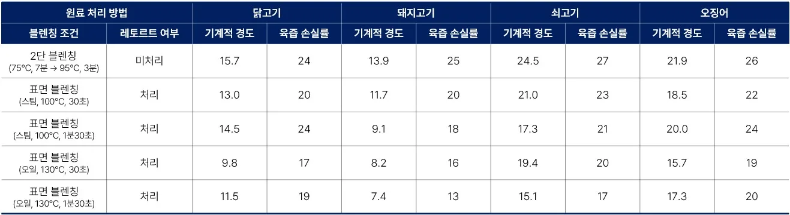
이후 블랜칭 조건을 연계할 경우 조직감 개선 효과는 더욱 극대화된다. 표 6에서확인되듯이, 블랜칭 온도와 시간 조건에 따라 닭고기, 돼지고기, 쇠고기, 오징어의기계적 경도와 육즙 손실률은 서로 다른 값을 보였다. 이는 원물별 조직 특성에 따라최적 처리 조건이 달라질 수 있음을 의미한다. 나아가 표 7은 염지와 블랜칭을 병행한 조건에서 조직감 개선 효과가 가장 크게 나타남을 보여준다. 인산염 30%와 전분 70%의 염지 처리에 표면 블랜칭을 병행한 경우, 기계적 경도는 약 73%, 육즙 손실률은 약 76% 감소하였다.
따라서 육류 고형부 공정의 핵심은 단순히 최종 열처리 강도를 조정하는 데 있지않다. 비비고 공정은 멸균 이전 단계에서 고형부의 조직을 사전에 안정화하고, 원물별블랜칭 조건을 조정함으로써 고온 멸균 이후에도 식감과 보수력을 유지할 수 있는조건을 형성하였다. 이는 고형부의 관능적 품질을 최종 멸균 단계가 아니라 전처리단계에서 제어하려는 접근으로, 액상부와 고형부를 분리 처리한 뒤 재결합하는 공정아키텍처 재구성의 핵심 요소로 해석할 수 있다.
[표 6] 블랜칭 온도·시간 조건에 따른 육류의 기계적 경도 및 육즙 손실률 비교
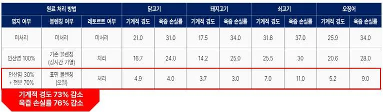
[표 7] 염지·블랜칭 병행 처리에 따른 육류의 기계적 경도 및 육즙 손실률 비교
출처: 표 6 및 표 7은 CJ제일제당(주), 「식품 재료의 제조방법 및 식품 재료」, 제10-2104640호를 바탕으로 저자 작성
4.2.4 고형부 규격화: 냉동블록 공정을 통한 조직감 유지와 품질 표준화
야채·해산물 등 고형 원료는 레토르트 멸균 과정에서 형태가 무너지거나 조직감이 저하되기 쉽다. 특히 원료를 낱개 상태로 투입할 경우, 충진 과정에서 원료의 크기와 배치가 불균일해지고 열처리 과정에서 물성 변화가 크게 나타날 수있다. 비비고 공정은 이러한 문제를 완화하기 위해 원재료를 전처리한 뒤 냉동블록형태로 규격화하여 투입하는 방식을 적용하였다. 이 공정은 원물 전처리, 냉동블록 제조, 투입, 레토르트 살균, 상온유통 제품화의 5단계로 구성된다(그림 18).
그림 18. 냉동블록 적용 가공식품 제조 공정 순서
출처: CJ제일제당(주), 가공식품의 제조방법 및 이에 의해 제조된 가공식품, 제10-2017-0134259호를 바탕으로 저자 작성
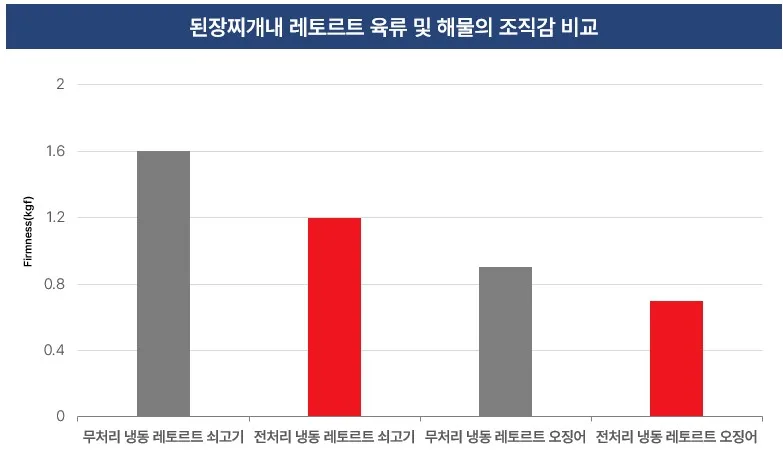
냉동블록 공정의 핵심은 고형 원료의 형태와 투입 단위를 사전에 표준화하는데 있다. 정량 성형과 급속 동결을 거친 고형 원료는 충진 단계에서 일정한 크기와 배치 상태를 유지할 수 있으며, 레토르트 살균 과정에서도 원료 간 품질 편차를 줄일 수 있다. 또한 냉동블록은 충진·멸균 과정에서 고형부의 급격한 물성변화를 완화하는 역할을 하며, 최종 제품에서 조직감 저하와 풍미 손실을 줄이는데 기여한다.
그림 19. 냉동블록 처리 여부에 따른 레토르트 후 육류·해산물 경도 비교
출처: CJ제일제당(주), 가공식품의 제조방법 및 이에 의해 제조된 가공식품, 제10-2017-0134259호를 바탕으로 저자 작성
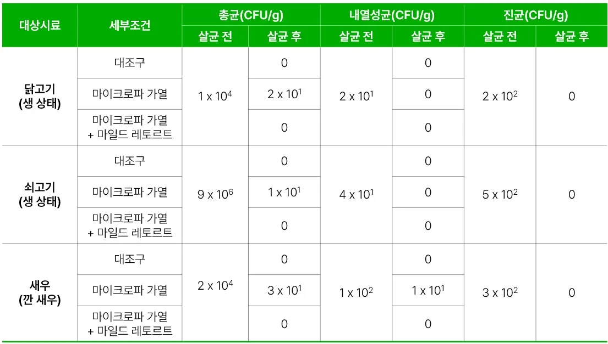
그림 19는 냉동블록 처리 여부에 따른 레토르트 후 육류·해산물의 경도 차이를
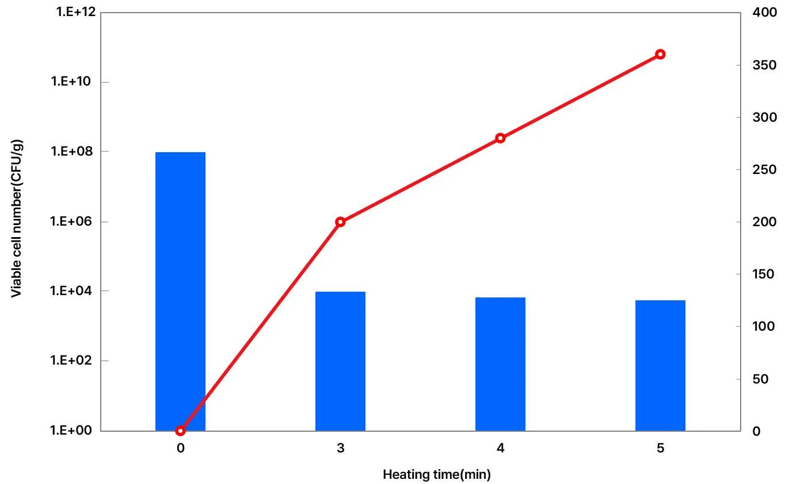
보여준다. 전처리 냉동블록을 적용한 조건은 무처리 냉동 조건보다 낮은 경도를 보였다. 식품 물성에서 경도는 시료의 조직이 외부 힘에 저항하는 정도를 의미하며,과도한 경도 증가는 소비자가 질김이나 딱딱함으로 지각할 수 있는 주요 요인이다. 따라서 경도 감소는 레토르트 과정에서 발생하는 조직 경화가 완화되었음을의미한다. 이는 냉동블록 처리가 고형부의 열처리 중 물성 변화를 억제함으로써,고온 살균 이후에도 육류·해산물의 씹힘과 부드러운 식감을 안정적으로 유지하는 데기여할 수 있음을 보여준다.
나아가 냉동블록 공정은 품질 유지뿐 아니라 생산 공정의 표준화와도 연결된다.
고형 원료를 일정한 단위로 규격화하면 자동 충진과 정량 투입이 가능해지고, 원료배합과 제품 중량의 편차를 줄일 수 있다. 따라서 냉동블록 공정은 고형부의 조직감유지, 충진 효율 향상, 품질 편차 축소를 동시에 지향하는 공정 설계로 해석할 수있다. 이는 액상부와 고형부를 분리 처리한 뒤 재결합하는 공정 아키텍처 재구성안에서, 고형부 품질을 안정적으로 제어하기 위한 또 다른 구성요소에 해당한다.
4.2.5 멸균 열처리 강도 저감: 마이크로파 전처리 감균을 통한 마일드 레토르트 전환
최종 멸균 단계의 열처리 강도를 낮추기 위해서는 원재료가 멸균 공정에 투입되기 전의 초기 미생물 부하12)를 줄이는 과정이 필요하다. 비비고 공정은 이를 위해 원재료에 마이크로파 가열을 적용하여 사전 감균을 수행한 뒤, 완화된조건의 레토르트 살균과 결합하는 방식을 채택하였다. 그림 20에서 확인되듯이,마이크로파 가열 시간이 증가함에 따라 생균 수13)는 급격히 감소하였으며, 일정시간 이후에는 낮은 수준으로 안정화되는 경향을 보였다. 이는 최종 레토르트단계에 투입되는 원재료의 미생물 부담을 사전에 저감할 수 있음을 보여준다.
표 8은 마이크로파 전처리와 마일드 레토르트 병행 조건의 살균 효과를 보여
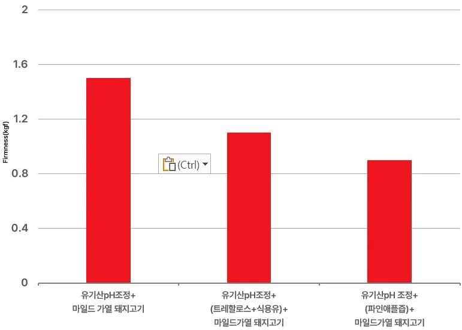
준다. 닭고기, 쇠고기, 새우 모두에서 마이크로파 가열 단독 처리 후에는 총균이 일부 잔존하였으나, 마이크로파 가열과 마일드 레토르트를 병행한 조건에서는 총균, 내열성균, 진균14)이 모두 검출되지 않았다. 이는 마이크로파 전처리가 단독살균 공정이라기보다, 최종 레토르트 살균의 부담을 낮추기 위한 사전 감균 단계로 기능한다는 점을 보여준다.
12) 초기 미생물 부하는 원재료가 살균 공정에 투입되기 전 보유하고 있는 미생물의 양을 의미한다. 13) 생균 수는 식품 시료 내에서 생존하여 증식 가능한 미생물의 수를 의미한다.
14) 총균은 시료 내 전체 세균 수를, 내열성균은 열처리 조건에서도 생존 가능성이 있는 세균을, 진균은 곰팡이와 효모 등을 포함하는 미생물군을의미한다.
그림 20. 마이크로파 가열 시간에 따른 생균 수 변화
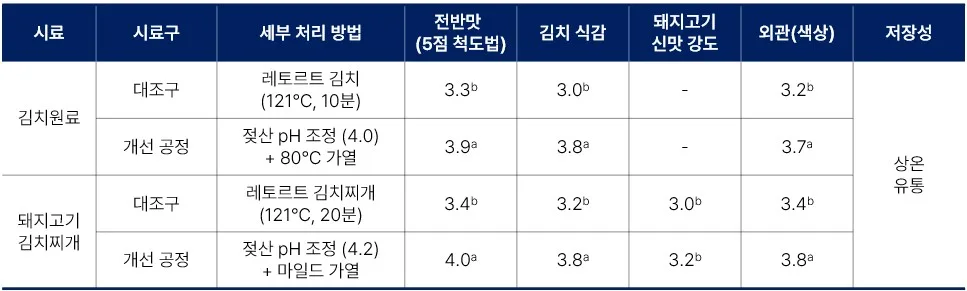
표 8. 마이크로파 전처리 및 마일드 레토르트 병행 처리에 따른 미생물 수 변화
출처: 표 8, 그림 20은 CJ제일제당(주), 식품 재료의 멸균 방법, 제10-2018-0128531호를 바탕으로 저자 작성
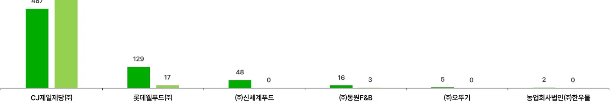
이러한 공정 전환은 단순히 최종 살균 온도를 낮춘 것이 아니라, 사전 감균을 통해후속 살균 부담을 줄이는 방식으로 설계되었다. 마이크로파 전처리는 원재료의 초기미생물 수를 낮추고, 마일드 레토르트는 완화된 조건에서 최종 미생물 안전성을 확보하는 역할을 한다. 이 결합을 통해 비비고 공정은 식품안전 기준을 충족하면서도 과도한열처리에 따른 관능적 품질 저하를 완화할 수 있다. 이는 3.3에서 논의한 식품공전의 ‘동등 이상의 효력’ 조건과도 연결된다. 즉, 고정된 고온·장시간 조건에만 의존하지않고 사전 감균과 후속 살균을 결합하여 동등한 미생물 안전성을 확보하는 방식으로, 대안적 공정 설계의 여지를 활용한 것이다.
따라서 마이크로파 전처리와 마일드 레토르트의 결합은 액상부·고형부 분리 처리이후 최종 제품의 미생물 안전성을 확보하는 마무리 단계로 기능한다. 앞서 살펴본액상부 정미성 향상, 육류 고형부 조직 안정화, 냉동블록 기반 고형부 규격화가 구성요소별 관능적 품질을 제어하는 과정이었다면, 이 단계는 재결합된 제품의 저장성을 확보하는 과정이다. 이로써 비비고 공정은 관능적 품질 제어와 미생물 안전성 확보를 하나의 공정 아키텍처 안에서 통합한다.
4.3 소프트혁신의 구현: 관능 속성의 정량화와 공정 변수 연동 체계
공정 아키텍처의 재구성이 관능적 품질 향상을 위한 기술적 전제라면, 소프트혁신은 맛·식감·외관과 같은 감각 속성을 혁신 목표로 설정하고 이를 설계 가능한 대상으로 체계화하는 개념이다. 비비고는 레토르트 공정에서 관능적 품질저하를 불가피한 제약으로 수용하기보다, 감각 속성을 공정 변수와 연결하여 측정·비교·조정 가능한 대상으로 다루었다. 즉, 풍미, 식감, 후미15), 외관과 같은 관능 속성을 온도, 시간, pH 조정, 전처리 방식 등 구체적인 공정 조건과 연동하여 관리하는 방식으로 소프트혁신을 구현하였다.
이러한 접근은 소재 처리 방식에 따른 물성16) 변화에서 확인된다. 그림 21은 돼지고기 소재 처리 방식에 따라 가열 후 경도가 달라짐을 보여준다. 유기산pH 조정에 마일드 가열을 적용한 조건보다, 트레할로스·식용유 또는 파인애플즙을 함께 적용한 조건에서 경도가 더 낮게 나타났다. 식품 물성에서 경도는 씹을 때 느껴지는 단단함이나 질김과 관련되므로, 경도의 감소는 고온 처리 이후에도 부드러운 식감이 유지될 가능성을 의미한다. 이는 관능적 품질이 단순한주관적 평가에 머무르지 않고, 소재 처리 조건과 물성 지표를 통해 공정적으로 제어될 수 있음을 보여준다.
15) 후미는 식품을 섭취한 뒤 입안에 남는 맛이나 향의 지속적 인상을 의미한다.
16) 식품 물성은 식품의 단단함, 탄력성, 점성, 씹힘성 등 물리적 특성을 의미한다.
그림 21. 소재 처리 방식에 따른 가열 돼지고기의 경도 변화
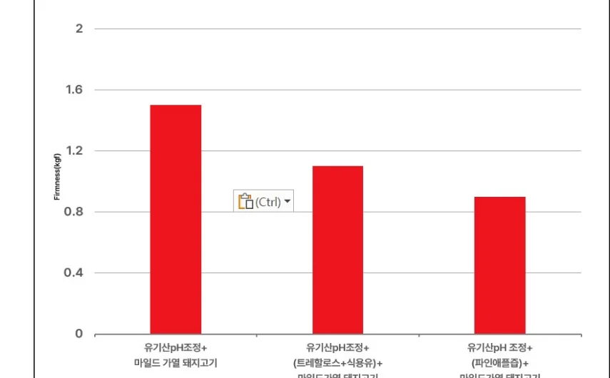
표 9. 개선 공정 적용 전후 김치 기반 제품의 관능적 품질 비교
출처: 그림 21 및 표 9은 CJ제일제당(주), pH 조정과 마일드 가열을 이용한 고품질의 육 및 김치 베이스 가공식품의 살균 방법,
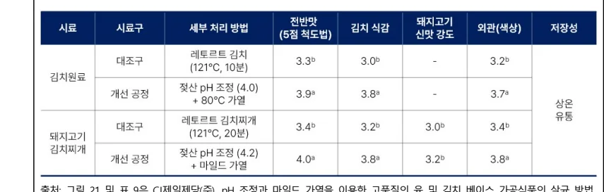
제10-1829168호를 바탕으로 저자 작성
표 9는 개선 공정 적용 전후의 관능적 품질 변화를 제시한다. 김치원료의 경우
개선 공정 적용 후 전반맛, 김치 식감, 외관 항목의 평가값이 모두 상승하였다.
돼지고기 김치찌개에서도 전반맛17), 김치 식감, 돼지고기 씹힘 강도, 외관 항목이 개선된 것으로 나타났다. 이는 pH 조정과 마일드 가열을 결합한 공정 조건이 저장성 확보에 그치지 않고, 소비자가 지각하는 맛·식감·외관의 개선과 연결될 수 있음을 보여준다.
17) 전반맛은 제품 섭취 시 느껴지는 맛의 전체적인 조화와 만족도를 의미하며, 본 연구에서는 관능평가상 종합적인 맛 품질 지표로 이해한다.
이 점에서 비비고의 소프트혁신은 감각적 가치를 정성적 기호의 영역에 남겨두지 않고, 공정 조건과 품질 지표의 관계 속에서 관리 가능한 대상으로 전환한것에 의의를 둔다. 관능 속성이 수치화되고 공정 변수와 연결될수록, 기업은특정 감각 품질을 반복적으로 구현할 수 있는 조건을 축적할 수 있다. 이는 레토르트 기반 상온 HMR에서도 맛과 식감이 단순한 결과값이 아니라, 설계와 검증의 대상이 될 수 있음을 의미한다. 따라서 비비고 사례는 Stoneman(2010)이 제시한 소프트혁신이 식품 제조 공정 안에서 구현된 사례로 해석할 수 있으며, 공정혁신과 감각적 품질 혁신이 결합될 수 있음을 보여준다(RQ 1-2).
4.4 혁신 성과의 제도적 보호: 특허 포트폴리오의 역할
공정 아키텍처 재구성과 소프트혁신은 제품 수준의 기술적 차별성을 형성하지만, 그 차별성이 지속되기 위해서는 모방 가능성을 제한하는 제도적 장치가필요하다. 식품산업의 공정 혁신은 제품 외관만으로 기술 내용을 파악하기 어렵다는 점에서 암묵적 보호 효과를 가질 수 있다. 그러나 유사 공정의 개발이나우회 설계 가능성도 존재하므로, 핵심 공정과 제품 구현 방식을 특허로 권리화하는 것은 혁신 성과를 제도적으로 보호하는 중요한 수단이 된다.
그림 22. HMR 주요 기업의 국내외 식품 분야 특허 출원 수 비교
출처: WINTELIPS 특허 데이터베이스. 지식재산처 KSIC-IPC 연계표 기준 저자 집계(비비고 론칭 이후: 2016~2025)
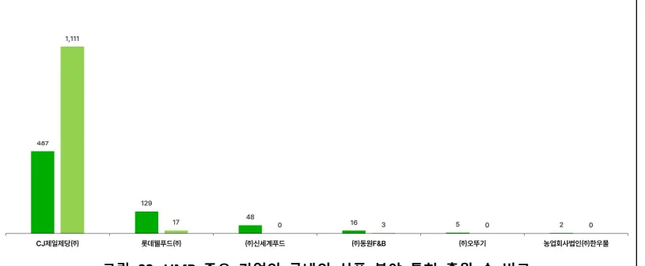
CJ제일제당의 특허 포트폴리오는 이러한 제도적 보호 전략을 보여준다. HMR 주요 기업의 식품 분야 특허 출원 수를 비교하면, CJ제일제당은 국내 출원뿐 아니라 해외 출원을 포함한 전체 출원 규모에서도 경쟁사와 뚜렷한 차이를 보인다 (그림 22). 비비고 론칭 이후인 2016년부터 2025년까지 CJ제일제당은 국내 487건,해외 포함 총 1,111건의 식품 분야 특허를 출원하였다. 이는 롯데웰푸드, 신세계푸드 등 주요 경쟁사와 비교할 때 양적으로 큰 격차가 존재함을 보여준다.
특히 해외 출원 규모는 CJ제일제당의 특허 전략이 국내 시장 보호에만 머무르지 않음을 시사한다. 경쟁사들의 해외 출원이 제한적인 데 비해, CJ제일제당은주요국 및 PCT 경로를 활용하여 특허 보호 범위를 확장하고 있다. 이는 비비고를 포함한 HMR 제품군의 기술적 차별성을 국내외 시장에서 제도적으로 보호하려는 전략으로 해석할 수 있다. 공정 아키텍처 재구성과 관능 품질 구현에 관한기술이 특허 포트폴리오로 축적될수록, 후발 기업은 동일한 방식의 공정 설계나제품 구현을 모방하기 어려워진다.
따라서 CJ제일제당의 특허 포트폴리오는 단순한 출원 건수의 증가가 아니라, 공정 혁신과 소프트혁신의 성과를 제도적으로 보호하는 장치로 이해할 수 있다.
비비고 사례에서 나타난 액상부 처리, 고형부 안정화, 냉동블록, 마이크로파 전처리와 같은 공정 요소는 개별 기술인 동시에 상온 HMR의 품질혁신을 구성하는연결 구조의 일부이다. 이들 기술이 특허로 권리화됨으로써 CJ제일제당은 제품품질의 차별성을 유지하고, 후발 기업의 단기 모방 가능성을 낮추는 제도적 기반을 확보할 수 있다. 이는 식품산업에서 공정혁신, 감각적 품질혁신, 지식재산 전략이 결합될 수 있음을 보여주는 전략적 시사점을 제공한다(RQ 2).
제5장. 결론
5.1 연구 결과 요약
본 연구는 상온 HMR 제품에 내재된 저장성(storage stability)과 관능적 품질 (sensory quality)간의 구조적 trade-off가 공정 아키텍처 재구성과 소프트혁신의결합을 통해 완화될 수 있음을 비비고 국·탕·찌개류 사례를 통해 분석하였다.
비비고는 액상부와 고형부를 분리 가공한 뒤, 각 구성요소의 특성에 맞는 공정조건을 적용하고, 최종 단계에서 재결합하는 방식으로 공정 간 연결 구조를 재구성하였다. 이를 통해 상업적 멸균 기준을 충족하면서도 열처리 과정에서 발생하는 조직감과 풍미의 저하를 완화할 수 있는 조건을 형성하였다.
이 공정 재구성을 아키텍처 혁신으로 해석하는 근거는 개별 공정 기술의 성능자체가 아니라, 구성요소 간 연결 방식의 변화에 있다. 염지, 블랜칭, 냉동블록, 마이크로파 전처리 등 각 단계에서 활용된 기술은 기존 식품가공 지식의 연장선에 있다. 그러나 이들 기술은 ‘분리 가공 후 재결합’이라는 새로운 공정 연결규칙 아래 통합되었다. 그 결과 액상부와 고형부를 독립적으로 제어할 수 있게되었고, 전체 열처리 부담을 완화하는 방향으로 공정 구조가 재편되었다. 이는구성요소 지식은 유지하되 구성요소 간 연결 구조가 변화한다는 점에서 Henderson & Clark(1990)이 제시한 아키텍처 혁신의 정의에 부합한다.
소프트혁신 차원에서 비비고는 관능적 품질 저하를 레토르트 공정의 불가피한제약으로 수용하지 않았다. 대신 풍미, 식감, 후미, 외관 등 감각 속성을 공정변수와 연동된 설계 대상으로 전환하였다. 정미아미노산 함량, 경도, 관능평가결과 등은 감각 품질을 수치화하고 공정 조건과 연결하는 근거로 활용되었다.
이에 따라 관능 데이터는 단순한 사후 평가 지표가 아니라, 상온 HMR의 공정· 레시피 설계 과정에서 반복적으로 참조되는 판단 기준으로 기능하였다. 이는감각적 가치를 측정·설계·표준화 가능한 형태로 체계화하는 것이 소프트혁신의 핵심 속성이라는 Stoneman(2010)의 논의와 연결된다.
나아가 본 사례는 지배적 공정 구조가 안정화된 산업에서도 아키텍처 수준의재구성을 통해 품질 제약을 완화할 수 있음을 보여준다. 레토르트 기반 상온 HMR 산업에서는 저장성 확보와 관능적 품질 유지가 오랫동안 긴장 관계를형성해 왔다. 비비고 사례는 이 긴장을 개별 원료 개선이나 레시피 조정만으로해결한 것이 아니라, 공정 간 연결 방식 자체를 재설계함으로써 완화한 사례이다. 또한 이러한 공정 혁신과 소프트혁신이 특허 포트폴리오를 통해 제도적으로 보호될 때, 후발 기업의 단기 모방 가능성을 낮추고 경쟁우위의 지속가능성을 높일 수 있음을 시사한다.
5.2 실무적·전략적 시사점
본 연구는 저장성-관능적 품질 간 trade-off와 같은 구조적 제약에 직면한식품 기업과 정책 입안자에게 다음과 같은 실무적·전략적 시사점을 제시한다.
첫째, 식품산업에서 공정혁신은 개별 공정의 효율 개선을 넘어 공정 간 연결 구조의재설계로 확장될 필요가 있다. 원료 품질 개선, 레시피 조정 등 특정 조건의 변경은 기존 공정 아키텍처 내부에서 이루어지는 점진적 개선에 머무를 가능성이크다. 반면 상온 HMR과 같이 개별 공정의 최적화만으로 구조적 trade-off를충분히 완화하기 어려운 경우에는 제품을 구성하는 요소 간 관계와 처리 순서를 재검토하고, 공정 전체의 아키텍처를 재구성하는 방식으로 품질혁신의 범위를 확장할 필요가 있다.
둘째, 관능적 품질은 정성적 판단의 영역에만 머무르기보다, 정량적 설계와 검증이가능한 품질 목표로 관리할 필요가 있다. 맛, 향, 식감, 외관 등 감각 속성은소비자 경험에 의해 평가되는 주관적 요소를 포함하지만 동시에 전처리 방식, 원료 배합 등 공정 변수와 밀접하게 연결된다. 따라서 관능적 품질을 단순한사후 평가 결과로만 다루기보다, 공정 조건과 관능평가 데이터를 연계하여 제품개발 단계에서 반복적으로 설계·검증하는 체계가 필요하다. 이러한 접근은 소프트혁신을 일회성 제품 개선이 아니라 재현과 확장이 가능한 품질혁신 체계로 전환하는 기반이 된다.
셋째, 식품산업의 혁신 역시 다른 산업과 마찬가지로 기술 개발과 제도적 보호가결합될 때 지속 가능한 경쟁우위로 이어질 수 있다. 식품산업은 제품 모방과 공정우회 가능성이 존재하므로, 단일 공정 요소나 개별 레시피만으로는 차별성을 장기간유지하기 어렵다. 따라서 본 사례와 같이 공정 간 연결 구조와 품질 구현 방식이결합된 혁신은 지식재산 전략과 함께 설계될 필요가 있다. 특히 공정혁신과 소프트혁신이 결합된 복합적 혁신은 특허를 통해 권리화될 때 모방 가능성을 낮추고, 기업이 개별 기술 요소를 넘어 제품 품질을 구현하는 시스템 수준의 경쟁우위를확보하는 데 기여할 수 있다.
나아가 글로벌 시장 관점에서 비비고 국·탕·찌개류의 공정 아키텍처 혁신은 K-Food 제품군의 해외 확장 가능성과도 연결된다. CJ제일제당은 이미 해외 생산거점과 매출 기반을 확보하고 있으나, 글로벌 성과는 냉동만두 등 일부 주력 품목을 중심으로 형성되어 왔다. 이러한 상황에서 국·탕·찌개류와 같은 상온 HMR은냉장·냉동 제품에 비해 보관과 재고관리의 제약이 상대적으로 적어 해외 시장확대에 유리한 특성을 지닌다. 그러나 글로벌 시장에서 한식 경험을 재현하기위해서는 저장성 확보만으로 충분하지 않으며 감각적 품질을 높은 수준으로유지하는 것 또한 필수적이다. 이러한 점에서 저장성과 관능적 품질 간 trade- off를 완화한 공정 아키텍처 혁신은 상온 HMR의 글로벌 경쟁력 확보를 위해기존 주력 품목 중심의 해외 확장을 넘어, 다양한 한식 HMR 제품군으로 확장가능한 제조공정 아키텍처 역량이 중요하다는 점을 시사한다.
5.3 연구의 한계 및 향후 연구 방향
본 연구의 한계는 크게 두 가지로 정리된다.
첫째, 본 연구는 공개특허, 기업 공시자료, 정부 통계, 학술 문헌 등 2차 자료를 주요 분석 기반으로 활용하였다. 식품공학 및 식품생명공학 분야의 박사급전문가 인터뷰를 통해 기술적 해석의 타당성을 보완하였으나, 기업 내부에서공정 설계 의사결정이 어떠한 과정을 거쳐 이루어졌는지, 각 기술 요소가 어떤조직적·전략적 판단 아래 통합되었는지를 직접 확인하는 데는 한계가 있다.
둘째, 본 연구는 단일 사례연구로 수행되었기 때문에 분석 결과의 일반화가능성에 제한이 있다. 본 연구의 결론은 상온 국·탕·찌개류라는 특정 제품군과 CJ제일제당이라는 선도기업의 사례에 기반한다. 따라서 이를 다른 식품 카테고리나후발 기업의 혁신 전략에 적용하기 위해서는 추가적인 사례 비교와 실증 분석이 필요하다.
향후 연구에서는 다양한 식품 카테고리와 시장 지위가 상이한 기업을 포함하는 다중 사례연구가 요구된다. 이를 통해 공정 아키텍처 재구성과 소프트혁신의 결합이 어떠한 기술적·시장적·제도적 조건에서 효과적으로 작동하는지 보다 체계적으로 검증할 수 있을 것이다. 또한 HMR 관련 특허군을 별도로 식별한뒤, 인용 네트워크와 기술분류 네트워크를 결합하여 식품산업 내 공정혁신의기술적 확산 경로를 분석하는 후속 연구도 가능하다.
Reference
논문 [1] R. Adner and D. A. Levinthal, "Demand heterogeneity and technology evolution: implications for product and process innovation," Management Science, vol. 47, no. 5, pp. 611-628, May 2001.
[2] P. Anderson and M. L. Tushman, "Technological discontinuities and dominant designs: a cyclical model of technological change," Administrative Science Quarterly, vol. 35, no. 4, pp. 604-633, 1990.
[3] T. C. Beaman, J. T. Greenamyre, T. R. Corner, H. S. Pankratz, and P. Gerhardt, "Bacterial spore heat resistance correlated with water content, wet density, and protoplast/sporoplast volume ratio," J. Bacteriology, vol. 150, no. 2, pp. 870-877, 1982.
[4] M. Buckley, C. Cowan, M. McCarthy, and C. O'Sullivan, "The convenience consumer and food-related lifestyles in Great Britain," J. Food Products Marketing, vol. 11, no. 3, 2005.
[5] P. M. Catauro and M. Perchonok, "Assessment of the long-term stability of retort pouch foods to support extended duration spaceflight," J. Food Science, vol. 77, no. S1, pp. S29-S39, 2012.
[6] J. E. Gaze, "Microbiological aspects of thermally processed foods," J. Applied Microbiology, vol. 98, no. 6, pp. 1381, 2005.
[7] J. M. Harris, R. Shiptsova, J. M. Harris, and R. Shiptsova, "Consumer demand for convenience foods: demographics and expenditures," AgEcon Search, 2007.
[8] R. Henderson and K. B. Clark, "Architectural innovation: the reconfiguration of existing product technologies and the failure of established firms," Administrative Science Quarterly, vol. 35, no. 1, pp. 9, 1990.
[9] P. S. Jimenez, S. P. Bangar, M. Suffern, and W. S. Whiteside, "Understanding retort processing: a review," Food Science & Nutrition, vol. 12, no. 3, pp. 1545-1563, 2024.
[10] M. M. Nadkarni and T. A. Hatton, "Optimal nutrient retention during the thermal processing of conduction-heated canned foods: application of the distributed minimum principle," J. Food Science, 1985. [11] A. Priyadarshini, G. Rajauria, C. P. O'Donnell, and B. K. Tiwari, "Emerging food processing technologies and factors impacting their industrial adoption," Critical Reviews in Food Science and Nutrition, vol. 59, no. 19, pp. 3082-3101, 2018.
[12] A. Ch. Stratakos and A. Koidis, "Suitability, efficiency and microbiological safety of novel physical technologies for the processing of ready-to-eat meals, meats and pumpable products," Int. J. Food Science & Technology, vol. 50, no. 6, pp. 1283, 2015.
[13] H. Tanaka, "Viscoelastic phase separation in soft matter and foods, " Faraday Discussions, vol. 158, pp. 371, 2012.
[14] M. van Boekel, V. Fogliano, N. Pellegrini, C. Stanton, and G. Scholz, "A review on the beneficial aspects of food processing," Molecular Nutrition & Food Research, vol. 54, no. 9, pp. 1215-1247, 2010.
[15] Q. Wang, M. Zhang, B. Adhikari, C. Ping, and C. Yang, "Effects of va rious thermal processing methods on the shelf-life and product quality of vacuum-packaged braised beef," J. Food Process Engineering, vol. 42, no. 4, 2019.
[16] S. S. Yu, H. S. Ahn, and S. H. Park, "Heat penetration and quality analysis of retort processed vegetables for home meal replacement foods, "Food Science and Biotechnology, vol. 32, no. 8, pp. 1057-1065, 2023. [17] Y. Zhang, L. Dong, J. Zhang, J. Shi, Y. Wang, and S. Wang, "Adverse effects of thermal food processing on the structural, nutritional, and biological properties of proteins," Annual Review of Food Science and Technology, vol. 12, no. 1, pp. 259-286, 2021.
[18] 김연정, 변명희, "HMR 가정식 대체 식품은 왜 성장하는가?," 식품산업과 영양, 22권, 1호, 8-12쪽, 2017년.
[19] 이두영, "소비자들의 생활환경 변화에 따른 식품 시장의 성장,"식품과학과 산업, 50권, 3호, 33-38쪽, 2017년.
단행본 [20] P. Stoneman, Soft Innovation: Economics, Product Aesthetics, and the Creative Industries, Oxford Univ. Press, 2010.
[21] G. Tucker and S. Featherstone, Essentials of Thermal Processing, Wiley, 2010.
보고서 [22] 박성진, 허성윤, "가정식 대용식품, 한국 농업의 기회인가," 농업전망 2016: 급변하는 농업·농촌, 내일을 기획한다, 한국농촌경제연구원, 2016.
[23] D.-Y. Lee, HMR Industry Evolution Model, Nielsen Korea, 2017. [24] 식품의약품안전처, 식품산업생산실적 통계, 식품의약품안전처, 각 연도.
[25] 식품의약품안전처, 식품의 기준 및 규격(식품공전), 식품의약품안전처고시.
특허 [26] CJ제일제당, 가공식품의 제조방법 및 이에 의해 제조된 가공식품, 공개특허 제10-2018-0134259호, 2017년 5월 26일 출원.
[27] CJ제일제당, 식품 재료의 멸균 방법, 등록특허 제10-1907743호, 2017년 10월 18일 출원.
[28] CJ제일제당, pH 조정과 마일드 가열을 이용한 고품질의 육 및김치 베이스 가공식품의 살균방법, 등록특허 제10-1829168호, 2018년 2월 7일 등록.
[29] CJ제일제당, 식품 조리물의 제조방법, 국제공개번호 WO 2018/128531 A1, 2018년 1월 9일 국제출원.
[30] CJ제일제당, 식품 재료의 제조방법 및 식품 재료, 등록특허 제10- 2104640호, 2020년 4월 20일 등록.
[31] CJ제일제당, 식품의 살균방법 및 이를 포함하는 식품, 공개특허제10-2023-0154156호, 2023.